UX, Interaction & Media Designer
Jonas Hegelund Rasmussen
I'm an empathy driven designer who designs experiences grounded in research, tested with real users, and built to be fun, satisfying, and properly usable.
Bachelor's and Master's in Digital Design · Aarhus University 2020 - 2025
The Problem
Hearing damage from noise peaks in younger people — not because they don't know the risk, but because consequences are deferred until years later. We focused on the neglected window: proper rest after exposure, not prevention in the moment.
Research
We interviewed clubbers in Aarhus city at midnight. Key finding: people discount the risk because consequences aren't felt immediately. We also measured real venue dB levels — averaging 95.48 dB, meaning roughly one hour before risk of damage.
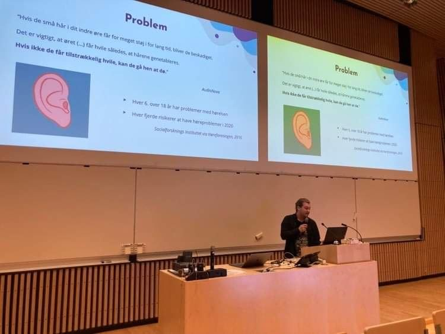
Presenting findings at the design expo
Concept Sketches
Two concepts explored before landing on the watchband. The final direction merged tracking and display into a single surface attachable to existing watches.
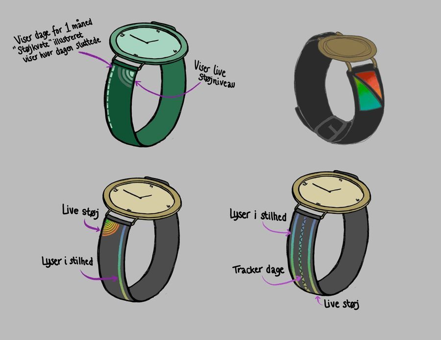
Watchband LED concept sketches
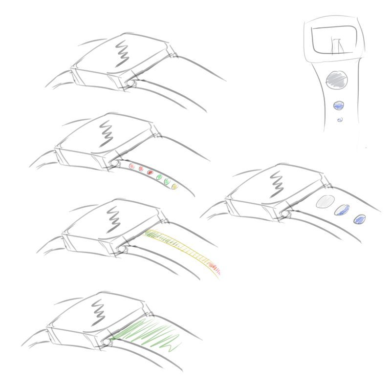
LED state iterations
LED Feedback States
Two core states driven by ambient noise level: quiet mode (soothing patterns reward rest) and loud mode (building intensity signals exposure accumulation).
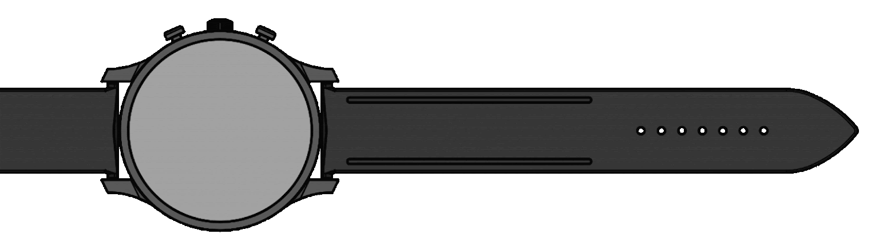
In silence — calm, soothing pattern
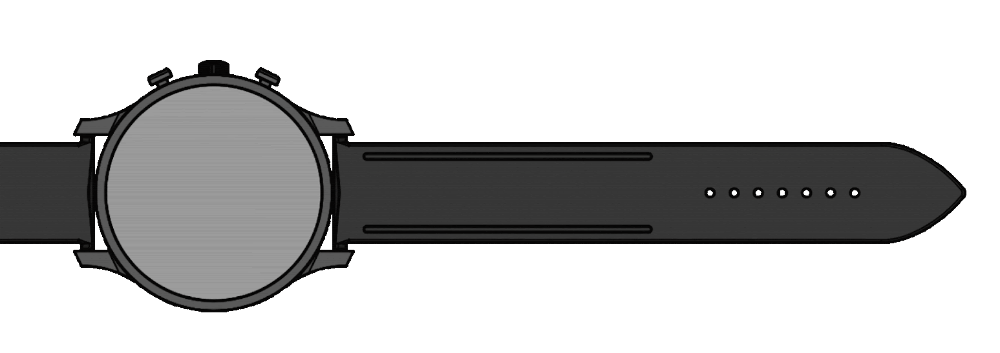
In loud environment — intensity building
Prototype
Arduino-powered: dB sensor for input, LED strip for visual feedback, piezo for haptics. Band 3D-printed to fit an Apple Watch, with a laser-cut box housing the electronics.
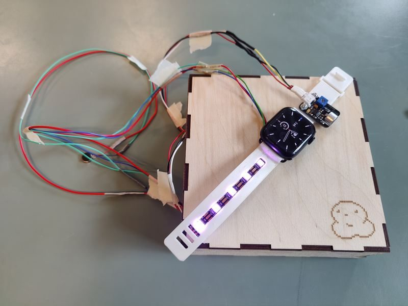
Final prototype on Apple Watch
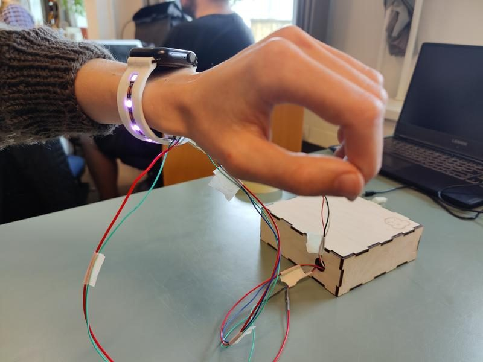
LED strip detail
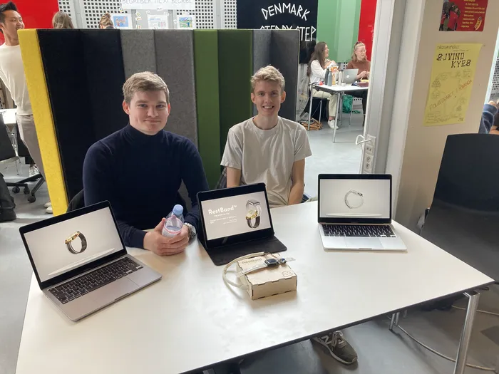
Presented at the department for digital design and interaction technologies design expo
/Ani1 VR view 1.webp)
The Brief
CAVI gave us their studio, their interactive kit, and a deliberately loose prompt: explore interaction in a 3D space. That was more or less it. No fixed deliverable, no problem handed to us pre-defined.
Which sounds freeing, and it is, but an open brief is its own kind of challenge. You have to find the real question yourself. With a room full of interaction technologies in front of us, the one that pulled at us was this: what happens to a person’s sense of control when two people share one 3D world but reach into it through completely different interfaces? Setups like that get pitched as collaborative and equal. In practice they rarely are. One interface gives you reach and a clear view of everything, the other leaves you reacting to things you never chose.
So we made that imbalance the thing we’d actually investigate: put two very different interaction technologies into one shared space, watch how power moves between the people using them, and ask whether design can rebalance it.
Concept
We built a game. One player wears a VR headset and drops into a room they have to escape, hunting for keys scattered around the space. Everyone else sits at an interaction table above that same room, and their job is to stop them. They place physical pieces on the table and watch those pieces appear inside the game as walls, traps, and obstacles in the VR player’s path.
That split is the whole point. The VR player is inside the world, embodied, with a narrow first-person view, and they have to physically turn and move to work out where they are. The table players look down on the whole thing like they’re rearranging a board. Same world, two completely different relationships to it. The multimodal part isn’t a feature sitting on top of the game — it’s what the game is about.
VR player’s view — inside the escape room
/Ani2 VR view 2.webp)
Custom game objects made in Maya
Interaction
Two interfaces, two ways of acting on the world.
The VR player uses a headset and controllers, but their real input is their own body: looking around, orienting, walking the room to find keys and read the space. Everything they know comes from being inside it.
The table players use handcrafted physical pieces, each one mapped to something in the game. A small knight figure dropped a set of medieval armour into the world. Shards of glass set into clay became spike traps. Plain boxes became solid walls that block a corridor. Place a piece on the table, and its digital twin shows up in the room a moment later, right where the VR player has to deal with it.
So one side perceives the world by being in it, and the other side reshapes the world by handling objects on a table. The system keeps those two channels talking to each other in real time.
/Ani3 VR View 3.webp)
More custom assets, including torches with funtional lighting effects
/Ani4 Table View.webp)
Table view — The view seen on the interaction table. It has UI elements not visible to the VR player.
Process & Outcome
We modelled the custom assets in Maya and built the game in Unity, programmed in C#. The physical pieces were made by hand so each one looked and felt like its in-game counterpart, and that mattered more than we expected. Picking up a tiny knight is a different experience than tapping a menu, and it changed how the table players treated their choices.
Then we tested it with people, and the imbalance showed up loud and clear. When both sides act at the same time, the table players hold most of the power. They see everything, they shape the space, and the VR player spends the whole game reacting to decisions they had no part in.
The interesting bit was the fix. Pulling the two roles apart in time — letting one side act and then the other respond instead of both going at once — took a lot of the lopsidedness out of it. Asynchronous interaction gave the VR player room to read a situation and answer it rather than just getting buried. A small structural change, with a real effect on who feels in control.
Gameplay footage
/IMG_0426.webp)
/IMG_0428.webp)
/IMG_0430.webp)
/IMG_0431.webp)
/IMG_0433.webp)
/IMG_0434.webp)

The Research Question
Emergent design — where systems produce outcomes their designers never anticipated — is broadly acknowledged in interaction design but rarely treated as a structured methodology. It is usually described as a byproduct of iteration, not a guide for it. This thesis asks: how can emergence provide value to a design process as a deliberate methodological framework?
Why Fighting Games
Competitive fighting games are one of the clearest examples of emergence at scale. In Street Fighter II, an animation cancel bug accidentally became the foundational mechanic of the entire genre — combos. Players routinely exploit, adapt, and reconfigure game systems in ways the original developers never intended. Because fighting games are deterministic but not progressive, sufficiently engaged players will always find cracks. A game is never truly "solved."
This makes the fighting game community an ideal site for studying how emergent strategies develop, spread, and become legitimized within a user group — and what designers can learn from that process.

Street Fighter II — a bug became the foundation of the fighting game genre

Monthly tournament — participant observation

Weekly gathering — participant observation
Field Research
Two months of ethnographic participant observation within Fighting Game Community Aarhus (FGCA) — a community I have been an active member and vice chairman of. This insider status provided access to tacit knowledge and social dynamics an external researcher would likely have missed. Five community members participated in semi-structured group interviews, ranging from competitive tournament players to casual members and organizational founders. Thematic analysis of observations and interviews surfaced three recurring factors.
Three Situated Conditions
The thesis introduces situated conditions as the key variables that shape whether and how emergence occurs. They are not fixed system properties but continuously produced through use.
Context — immediate (the physical space, social presence, available devices) and extended (cultural norms, community hierarchies, what the game "means" to its community). Offline play at FGCA consistently produced richer emergent behavior than online play because it allows body language, informal commentary, and social validation that online interaction strips away.
Identity — users perform identity through system interactions, not just consume them. A player's choice of character, strategy, or playstyle is an act of self-expression. Identity shapes what affordances users notice, value, and choose to appropriate.
Temporality — emergence unfolds at different scales. In-the-moment emergence is quick and tacit, often unnoticed by outsiders. Continuous emergence is iteratively developed through repeated play. Determined emergence is actively explored before high-stakes performance. Each mode tells designers something different about where users are in their relationship with a system.

FGCA members at their venue

Second iteration framework — five-stage cycle
The Framework
The thesis produces a five-stage iterative framework for designing systems that actively cultivate emergence: (1) explore context and user group ethnographically; (2) adjust the prototype by designing for underdesign — deliberately leaving affordances open to interpretation; (3) activate user engagement in a real context where users are co-designers; (4) gather data on emergent outcomes using an ethnographic stance; (5) analyse and reframe — feed emergent outcomes back as design inputs for the next cycle.
The central design principle is underdesign: intentional incompleteness that invites user participation rather than trying to anticipate every use case. The kusoge sub-genre in fighting games — technically "broken" games that communities embrace precisely because the gaps invite creative strategies — is the purest demonstration of this in action.
The Problem
The internet is largely a facade for data extraction. Shoshana Zuboff describes surveillance capitalism as a system where human behaviour is continuously abstracted into data and sold to the highest bidder — yet users hand over personal information freely, because the cost is invisible. We wanted to make it visible. The question we designed around: what if we stripped the facade away and made the data extraction the game itself?
The Concept
A browser-based digital pet the user must keep alive by feeding it their data. Inspired by the Tamagotchi's compulsive attachment loop, the creature starts harmless and adorable. It asks for your name. Then your gender. Then your email. Then your social security number. You cannot outpace its hunger — the timer bar drains constantly, and each refusal chips away at its health. The game is explicitly designed to subdue critical thinking, which is precisely what it sets out to critique.
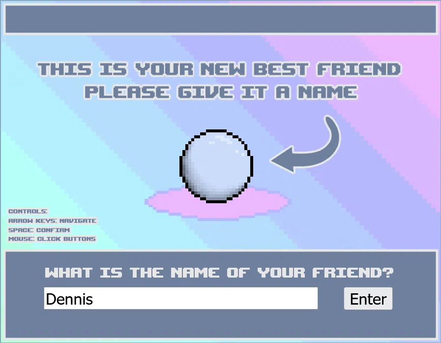
Initialisation — the creature hatches
Emotional Design as Mechanism
The creature's vulnerability was a deliberate design choice. We initially considered building the pet around a Mark Zuckerberg character, but agreed that users would resist feeding data to something obviously threatening. A helpless, cute blob triggers a protective instinct — the same instinct that makes you feel guilty letting a Tamagotchi starve. Zuboff puts it precisely: "You will not ask questions, because you are so busy being entertained." That is the trap. That is the game.
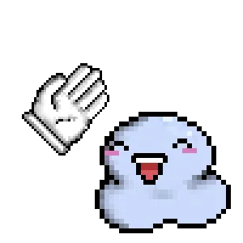
Fed — happy
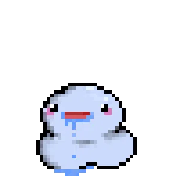
Hungry — demanding more
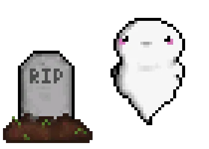
Dead — data outlives the pet
The Reveal
When the creature dies, the game over screen shows the user the complete data profile collected during play — both what they willingly typed in and the behavioural surplus captured silently in the background (clicks, time spent, patterns). The pet is gone. The data is not. "Every time we use the internet we leave footprints, and it seems harmless to us as users, but for someone those footprints can be used as valuable information."
Technically, all data is stored locally and deleted on page reload — the team deliberately cannot access it. This created a productive ethical tension: we are doing exactly what we critique. Is it acceptable for critical making to unsettle users in the name of the critique itself?
Active gameplay — escalating questions
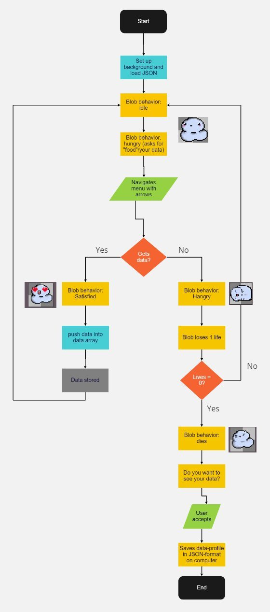
State flowchart
Outcome
Built in JavaScript and HTML with hand-drawn pixel art animations for every emotional state. Live and playable — the full loop takes about five minutes before the ethical reveal lands.
/img-023.jpg)
The Brief
EWII — a Danish energy and internet provider — is transitioning to green energy and wanted a design to help their customers better understand it. The core problem: Denmark has a single shared power grid where green and black energy are mixed together. Charging an electric car doesn't automatically mean using green energy, yet most consumers believe it does. EWII wanted a design that could educate users on when grid energy is actually green — and make that education feel worth engaging with.
Target Group & Approach
EWII provided their own persona research. Their most common customer type — "Loyal Lotte and Lars" — is a nuclear family with kids who actively want to reduce energy consumption but lack the knowledge to act on it. We decided to focus the design on children, using their natural curiosity as the entry point. If kids engage, parents engage — without feeling like they're being lectured.
The design approach was grounded in the LEGO Foundation's Learning Through Play framework: 67% of children in a 57,000-person survey said they enjoy learning through play, and 95% of parents said play strengthens family bonds. This gave us our lever: design something that children want to interact with, and parents will follow.
The Concept
Children regularly sociomorph around machines — attributing feelings and social qualities to non-human objects. A robot vacuum becomes a family member they don't want to be hungry. We wanted to design around that instinct. The result: an animated companion character that lives on the car's built-in monitor and reacts emotionally to the type of energy being used while the car charges.
When charging with green energy the companion is calm and happy. On black energy it works hard and looks intensely focused — designed deliberately not to look sad, but to elicit the child's empathetic urge to help. That nudge triggers a question to a parent: "Why is it struggling?" — which opens the exact conversation about energy we wanted to start.
/img-024.webp)
Green energy — calm and happy
/img-025.webp)
Black energy — working hard
Three Physical Forms
We explored three form factors before landing on the final concept. A plug-attached LED device was too brief an interaction. Integrating the companion into EWII's public fast-charge stations added story but couldn't build a meaningful relationship since most charging happens at home. The car monitor app won: it combines the familiarity of home charging with continuity — the companion stays visible throughout the journey, not just during plug-in.
/img-026.webp)
Early mascot concept — expressive LED face
Prototype & Pitch
We built a JavaScript prototype simulating the full interaction: greeting → simulated cable plug-in → random green or black energy drawn → companion reacts → charging completes → farewell. The prototype was pitched at a design showcase with EWII representatives, staged as a role-play: four chairs arranged as a car interior, screen at the front as the in-car monitor, team members acting as the family. This framing made the abstract concept immediately legible to stakeholders.
Strategic Design Lens
Beyond the user experience, the design was shaped by a "Happy Meal Effect" logic: invest in children's positive memories of a brand and you build future loyal customers. EWII gains not just better-informed current customers, but a pipeline of climate-aware adults who associate green energy with a character they grew up with. Shared value for users and company, built through play.

The Problem
Older adults aren't confused by technology because they're slow — they're confused because modern UIs are designed by people with entirely different mental maps. Interfaces like Chrome represent conceptual models (tabs as windows, hierarchy as depth) that older users have simply never been asked to adopt. As the gap between their mental models and the system's conceptual model widens, so does the feeling that technology isn't made for them — and the blame lands on themselves.
Research
We ran a focus group with five older adults at their homes, combined with direct observation. Participants (13 total across the project, aged 67–83) were selected based on Scandinavian data showing 50% of over-60s feared digital exclusion due to rapid tech development. Thematic analysis surfaced seven recurring themes: vulnerability, independence, forced behaviour, physical limitations, habit, information overload, and tangibility.
A key finding: when asked to close a single browser tab, participants would try to close the entire window. The tab/window hierarchy was entirely invisible to them — a browser wasn't a container, it was the website. This became the central problem we designed against.
Prototype: The Bookcase Browser
We replaced the browser's abstract file-cabinet metaphor with a physical bookshelf — concrete, three-dimensional, and deeply familiar to our target group. Three shelves mapped directly to browser behaviour: favorites (top), currently open pages (middle), and browsing history (bottom). Open pages became literal open books; closing a tab shelved the book; bookmarking moved it to favorites.
The prototype was built in Figma with full interaction fidelity for core browsing tasks. We tested four aesthetic variations crossing two dimensions: 2D vs. 3D rendering and warm vs. cold visual tone.

Four variations tested — 2D/3D × Cold/Warm aesthetics

Open pages displayed as literal open books on the shelf
Usability Testing
Participants completed identical tasks on Google Chrome and then on our prototype using a thinking-aloud method, followed by a semi-structured interview. Results were consistent: participants found the prototype more recognisable, tangible, and less frustrating. One described Chrome as "hard — something you have to learn," while our prototype let them "find answers yourself." Another called Chrome "boring and sad" and preferred our design on first impression alone.
We also tested whether the book metaphor specifically mattered. When asked if CDs could substitute for books on the shelf, one participant was clear: "A CD might be as tangible for you, but not for me." Metaphor relevance to the target group's lived experience was non-negotiable.
Workshop & Five Design Insights
Seven participants worked through tasks in a facilitated workshop kept intimate and one-on-one, to reduce the performance anxiety we'd observed in earlier research. The process concluded in five actionable insights for designing interactive systems for older adults:
1. Choose a concrete and spatial metaphor. 2. Make sure the metaphor is relevant to the target group. 3. Limit the amount of information on screen at once. 4. Balance text and icons carefully. 5. Create an encouraging design that doesn't punish exploration.
The Problem
Modern dating apps like Tinder have reduced romantic connection to an endless swipe loop — matches that rarely become real conversations, and conversations that rarely become dates. The premise behind U&AI: you learn more about a person in one actual meeting than in weeks of shallow chat. What if the shallow part was automated away entirely?
The Concept
A speculative dating app where AI handles everything before the date. Users answer a set of questions to build a profile; the system creates an AI representation of them. Two AI agents then conduct the conversation on their users' behalf — and if the match is strong enough, an actual date between the real people is arranged. The app replaces the part of dating that nobody enjoys.
Critical Design Framing
The project was grounded in Dunne & Raby's critical design framework — not as a product pitch, but as provocation. The goal was to make the absurdities of modern dating visible enough to spark reflection rather than solve them. As Dunne & Raby write: "Critical design, by generating alternatives, can help people construct compasses rather than maps." The challenge was landing on the compass side.
Exhibition & Reflection
Exhibited at a university design show, the prototype generated unexpected reactions. Visitors were more captivated by the absurdist way the two AIs talked to each other than by the underlying dating critique — some even saw genuine product potential. The message got absorbed by the medium.
Post-exhibition reflection identified two tensions: over-indexing on functionality (it felt too much like a real app) at the expense of para-functionality, and a spatial context that broke immersion — standing at a desktop PC disguised as a phone is not how you use Tinder. Future iterations would sharpen the satirical framing, improve AI prompting to keep absurdity intentional, and design the exhibition space to mirror the mindless scroll.
Dataminds A/S — Branding
Logo design for two client projects delivered during my time as Junior UX Developer at Dataminds.
RabbIT

Colour variants ›

Black

Brand blue

Gradient
PH Transport


Motion graphic — lego man searching
FGCA — Fighting Game Community Aarhus
Social media and event content produced independently as vice chairman and PR lead.

Monthly reel · Nov 2025

Monthly reel · Apr 2026

Monthly reel · Jun 2026

Fancon 2025

Fancon 2026
Personal — Hitbox Controller Overlay
Custom overlay design for a hitbox-style arcade controller.

Concept design

Final print